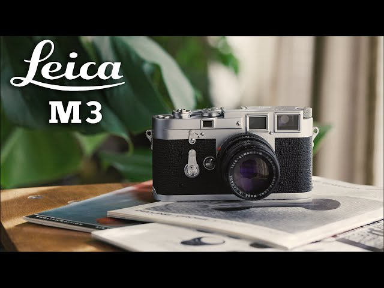

Unleash the Power of the Leica M3
For a limited time, experience photography like never before with our exclusive Leica M3 promotion. The Leica M3, known for its legendary craftsmanship and precision, can now be yours at a special discounted price. Capture moments with unparalleled clarity and style using the iconic M3, a timeless classic in the world of photography.
Key Features:
Don't miss this opportunity to own a piece of photographic history. Elevate your photography journey with the Leica M3. Act fast, as this promotion is available for a limited time only!
The Leica M3 boasts impressive technical specifications, setting the standard for its time:
The Leica M3, introduced in 1954, holds a special place in the history of photography:
It marked a significant shift with its innovative design and became a favorite among photographers for its exceptional build quality and precision. Over the years, it has become a symbol of craftsmanship and continues to influence modern camera design.
What sets the Leica M3 apart from other models in the M series:
While other M series cameras share the Leica legacy, the M3 stands out with its unique combination of features, including a bright-line viewfinder, robust build, and timeless design that has become a hallmark of Leica cameras.
Maximize your Leica M3 experience with these practical tips:
Explore a gallery of stunning images captured with the Leica M3: